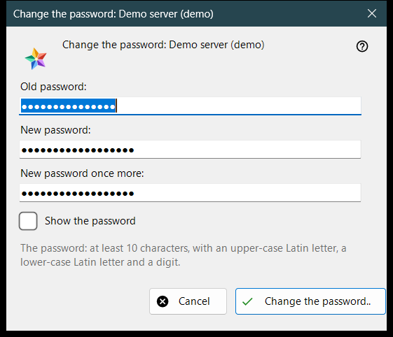
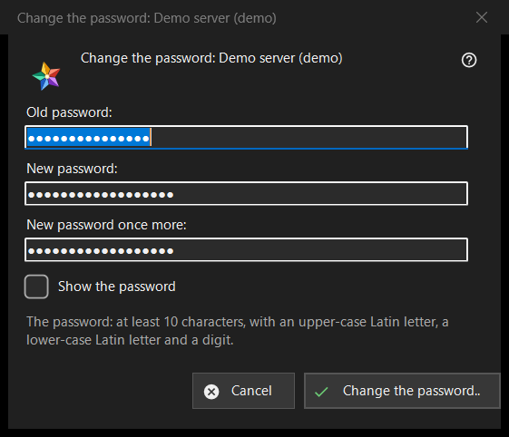

Change the password
What this is for
Changes the password of your account on an exchange server. It opens from the «Change the password..» button of a server entry in the «My devices» section of the resources list; the button is shown while that server is online. The heading names the account.


In this order
- Type the old password.
- Type the new password twice.
- Press «Change the password..»; «Cancel» closes the window and sends nothing.
The elements
The three fields
«Old password:», «New password:» and «New password once more:»; «Show the password» reveals them. The boxes are wiped when the window closes. The window only collects the passwords: the viewer sends them to the server over the connection of that entry.
The password rule
The note says: at least 10 characters, with an upper-case and a lower-case Latin letter and a digit. The window checks this before it sends anything and names the failing part, for example «The password is shorter than 10 characters.» or «The password has no digit.»; it also says «Give the old password.» and «The two passwords differ.». The server applies the same rule and has the last word.
After the change
On success the status says «The password is changed. This computer keeps working, and the account's other devices must sign in again.» The refusals: the old password did not fit; too many attempts (wait a minute and repeat); the server refused the change; there is no connection to the server (connect and repeat).